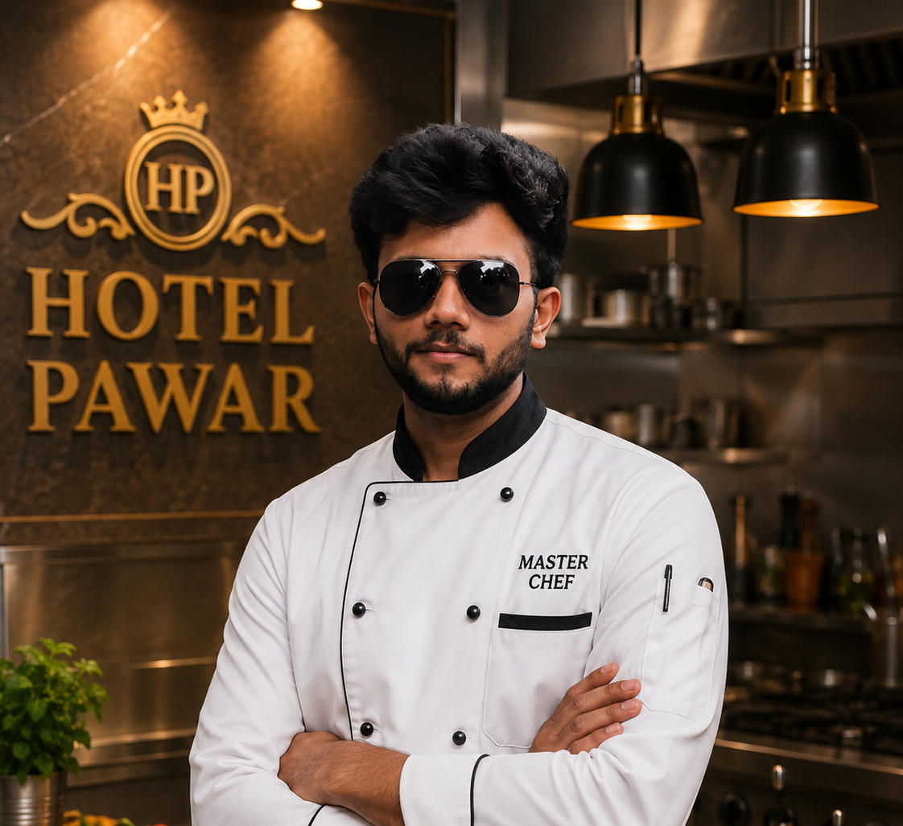
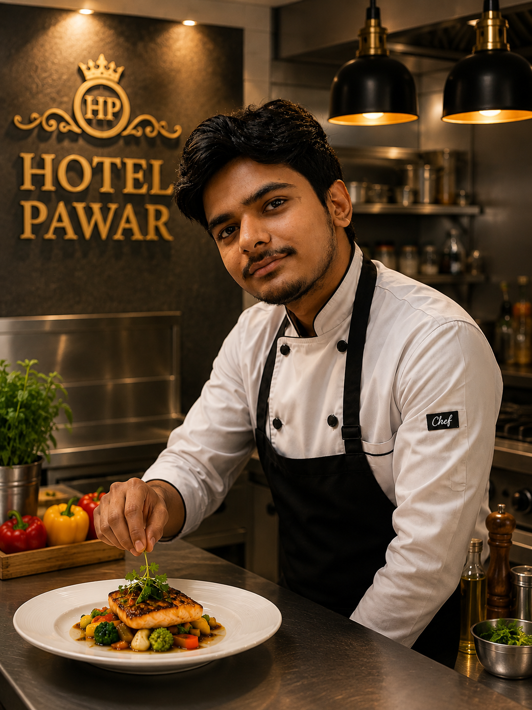
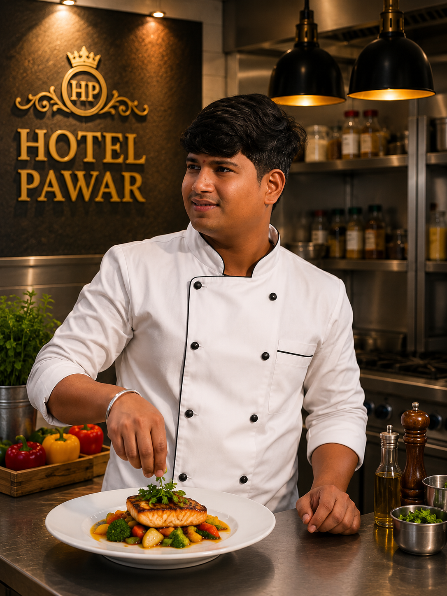
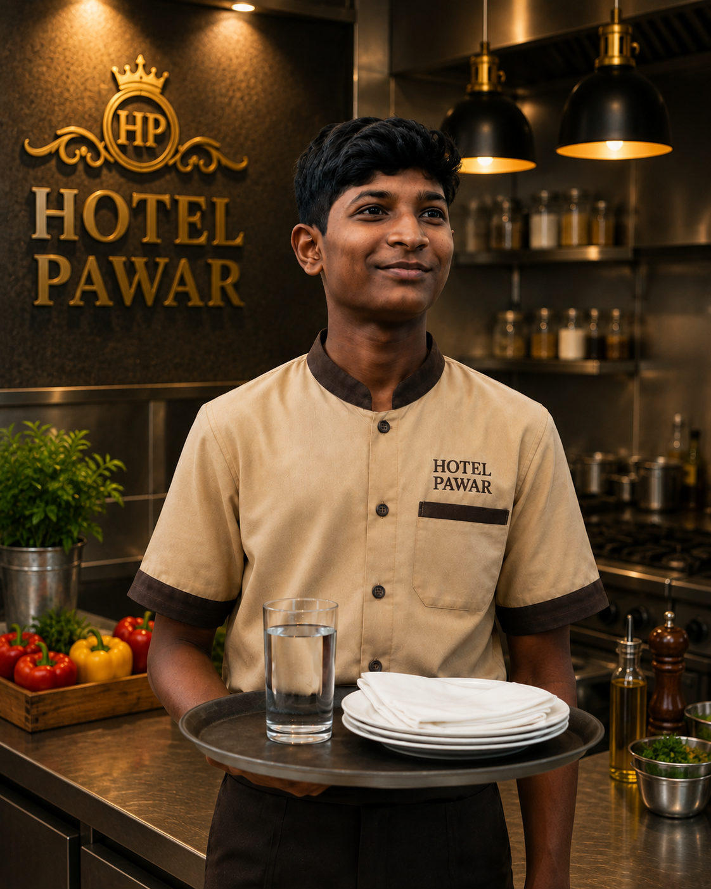

HOTEL PAWAR
HOTEL PAWAR
Welcome to Hotel Pawar
Since 1985, Hotel Pawar has been serving tasty and quality food to customers with love and dedication.
Our History
Hotel Pawar started its journey in 1985 with a simple dream of providing delicious and affordable food to everyone. With hard work, honesty and dedication, the hotel slowly became a trusted place for families, friends and food lovers.
Over the years, we have continued our tradition of preparing fresh and tasty food while maintaining the same quality and hospitality that our customers have loved for generations.
From a small beginning to a well-known food destination, our journey has been supported by the love and trust of our customers.
OUR HOTEL KITCHEN STAFF
Meet the dedicated team behind the delicious taste of Hotel Pawar.
| Photo | Name | Profession |
|---|---|---|
 |
Vivek Pawar | Master Chef |
 |
Vinit Shinde | Chef |
 |
Pavan Patil | Chef |
 |
Tanmay Jadhav | Kitchen Helper |
Our Master Chef
Our Master Chef leads the kitchen team and is responsible for maintaining the traditional taste and quality of Hotel Pawar. With years of experience, he prepares special dishes using fresh ingredients and traditional cooking methods.
Our chefs and kitchen helper work together as a team to provide fresh, delicious and hygienic food to every customer.
Thank You for Visiting Hotel Pawar!
Serving Happiness and Delicious Food Since 1985